Go to git-scm.com
Click on the Download 2.x for Windows button
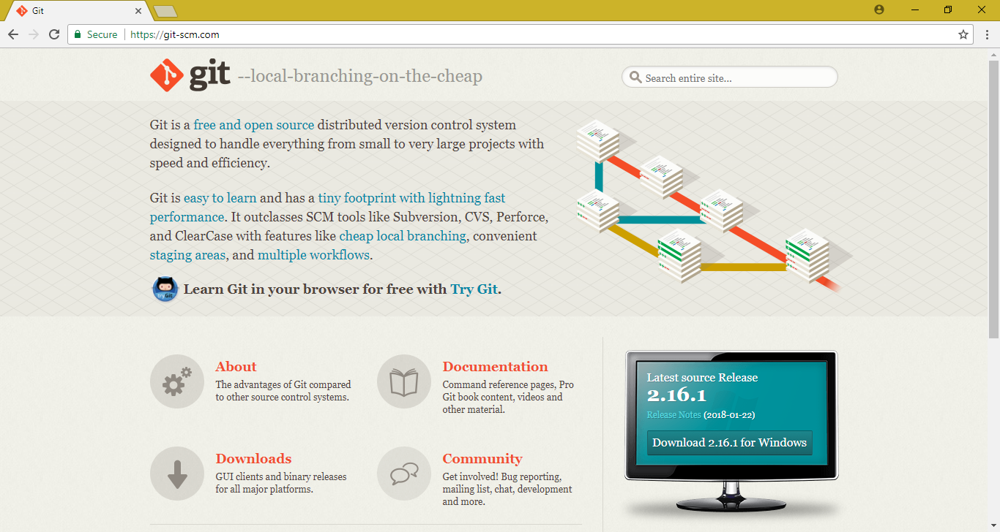
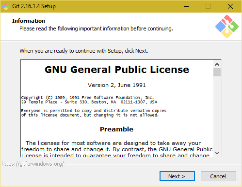
Accept default installation location
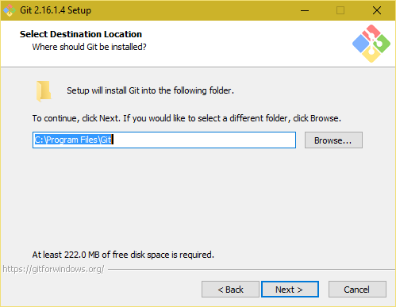
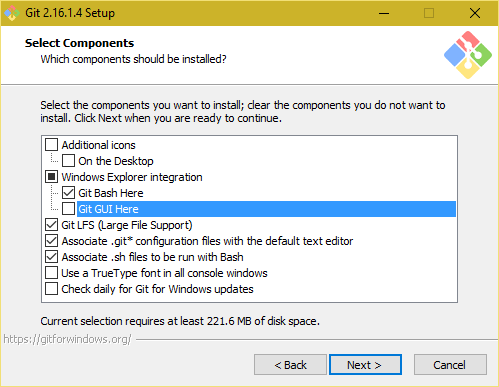
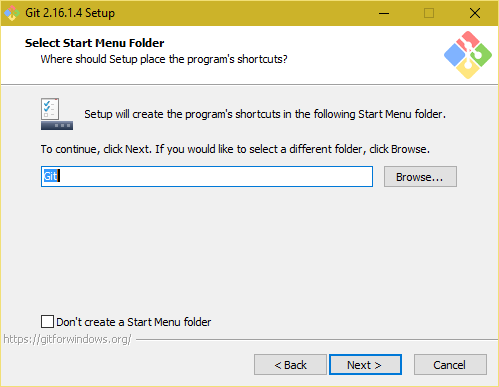
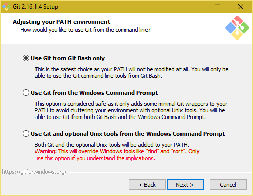
Click Next
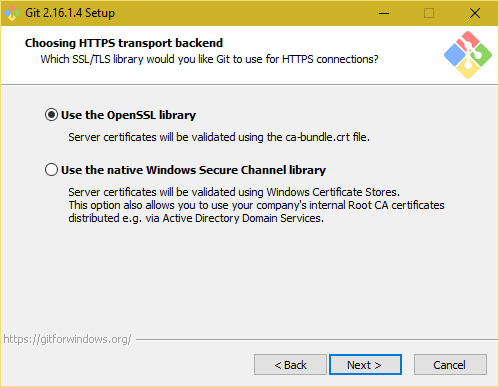
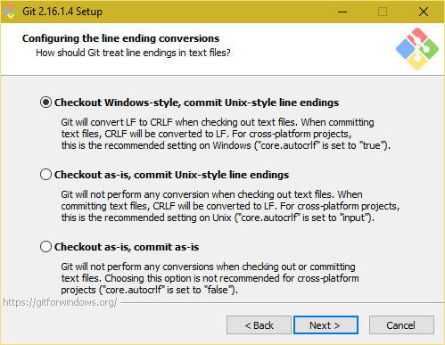
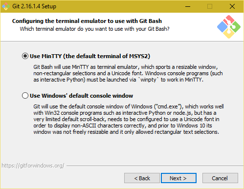
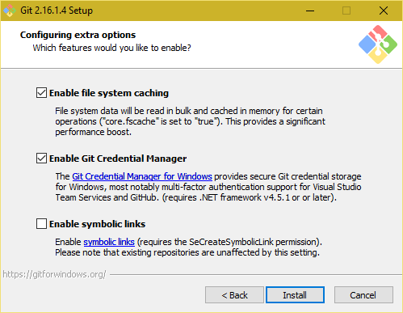
The installation process will complete
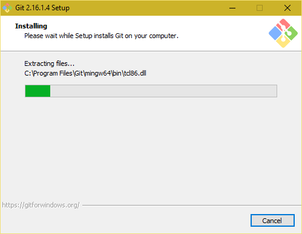
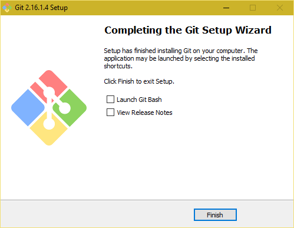
Search Git Bash
Note: At the search results, please right click and choose Pin to taskbar. We'll be using this application every day!
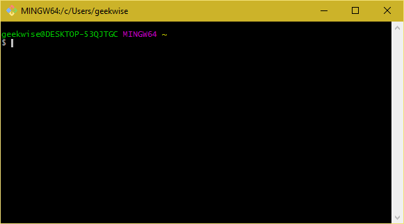
At the $ prompt, type git --version